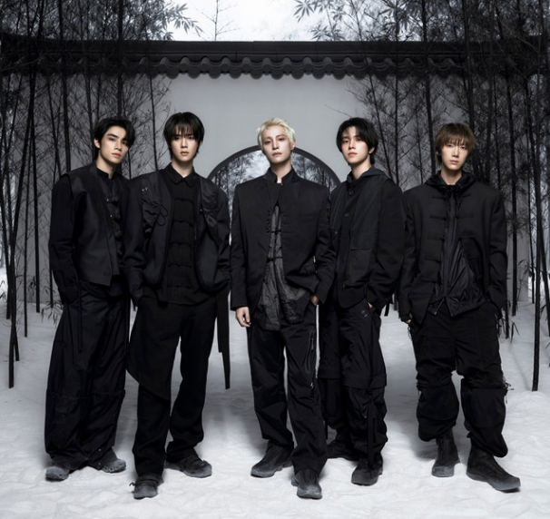

About WayV

WayV is the Chinese-based unit associated with NCT. The group has its own musical identity while still being part of the larger NCT concept. Their music includes powerful performances, vocals, and visually dramatic concepts.
Members
- Kun
- Ten
- Xiaojun
- Hendery
- Yangyang
Some of My Favorite Songs
- Love Talk
- Moonwalk
- Turn Back Time
- Phantom
- On My Youth
Why I Like WayV
I like WayV because they have a distinct style within NCT. Their songs and concepts often feel dramatic and elegant, which makes their unit stand out.